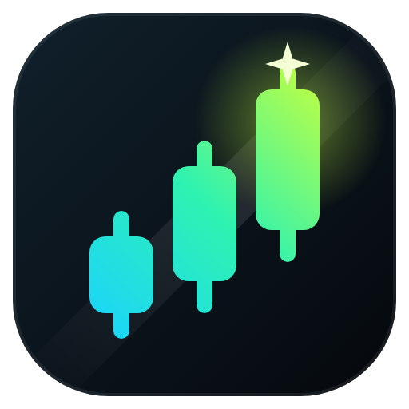

Your charts, in full spectrum.
Live wallpapers, your own videos, candle styles, glow and a price scale you can actually read, behind your TradingView charts. In Chrome and on the desktop.
Live preview — tap a look. Your real charts get wallpapers, your own videos, candle colours, glow and more.
Everything your chart was missing
Purely visual: prices, orders and your account are never touched.
Get it
Free. Updates install themselves.
FAQ
Is it safe? Does it read my trades or account?
No. It only changes how the chart looks: it paints behind the candles and recolours them. It never reads your orders, positions or account, and sends nothing from the page anywhere. Live mood “Position” reads the P&L text already drawn on your own chart, on your computer.
Why does Chrome say it can “read and change your data” on tradingview.com?
That's Chrome's standard wording for any extension that draws on a page. It's the only way to put a wallpaper behind the chart.
Does it work on TopstepX or other prop-firm platforms?
On platforms that use TradingView charts: open the chart, click the extension and choose “Turn on here”. Chrome asks once for that site.
How do updates work?
The Chrome Web Store and the desktop app update automatically. Your settings are kept.
Is it affiliated with TradingView?
No. Priism Skins is an independent product and isn't affiliated with, endorsed or sponsored by TradingView, Inc.